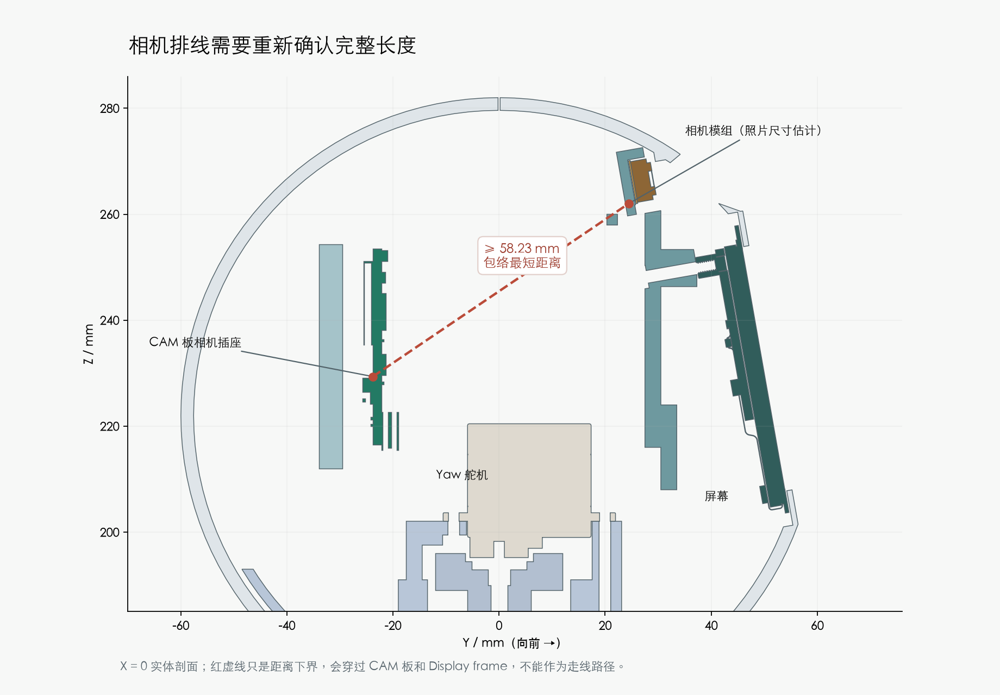
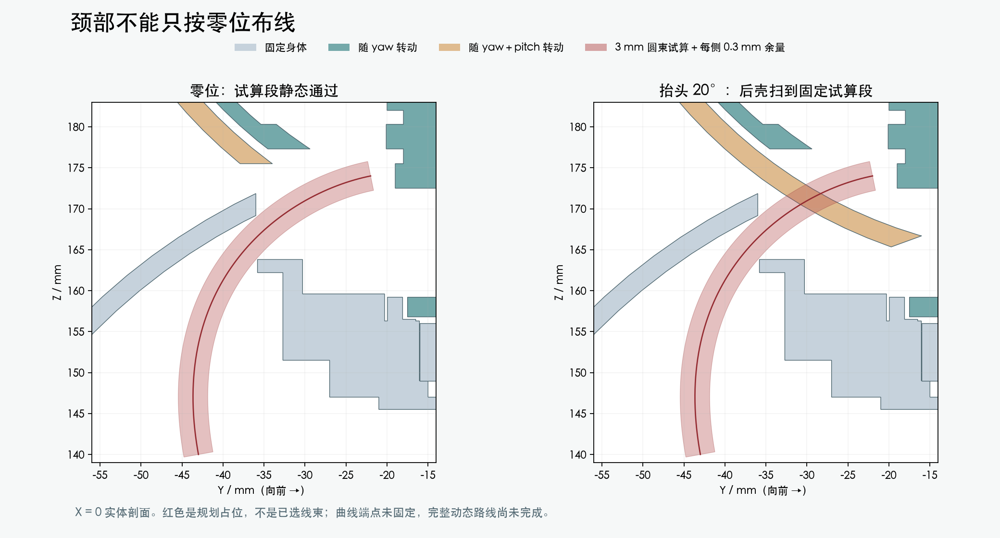
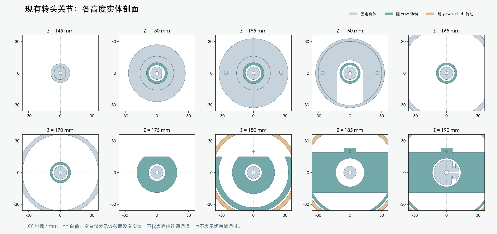
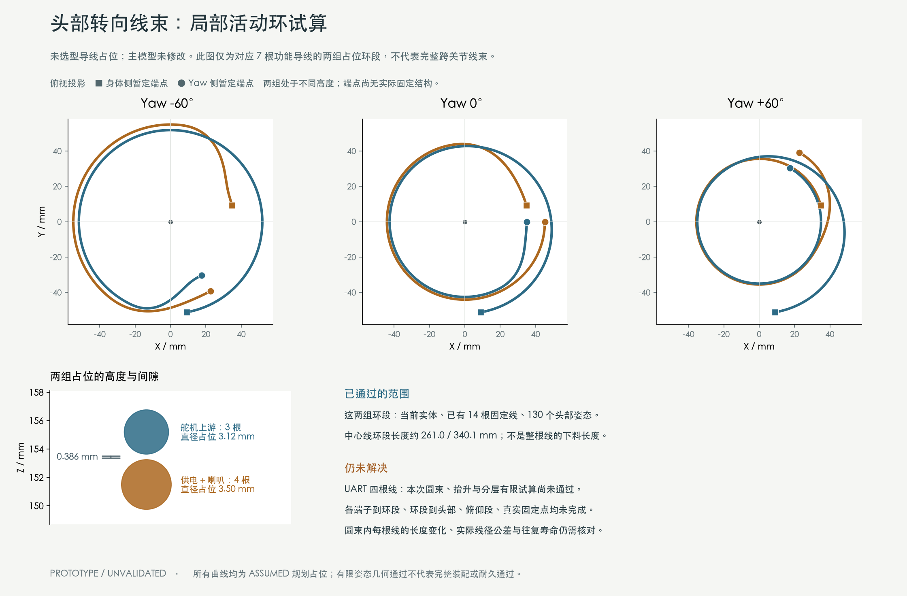
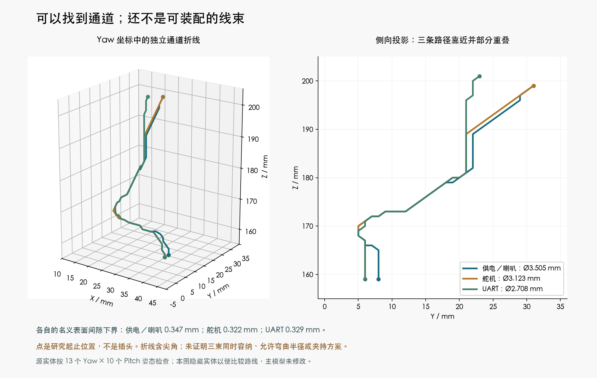
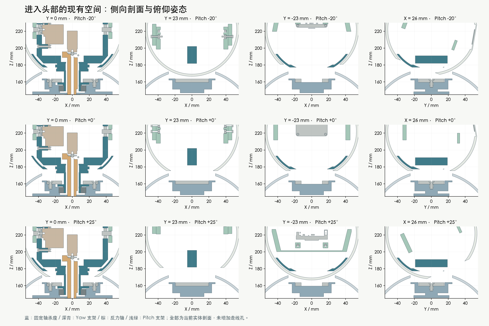
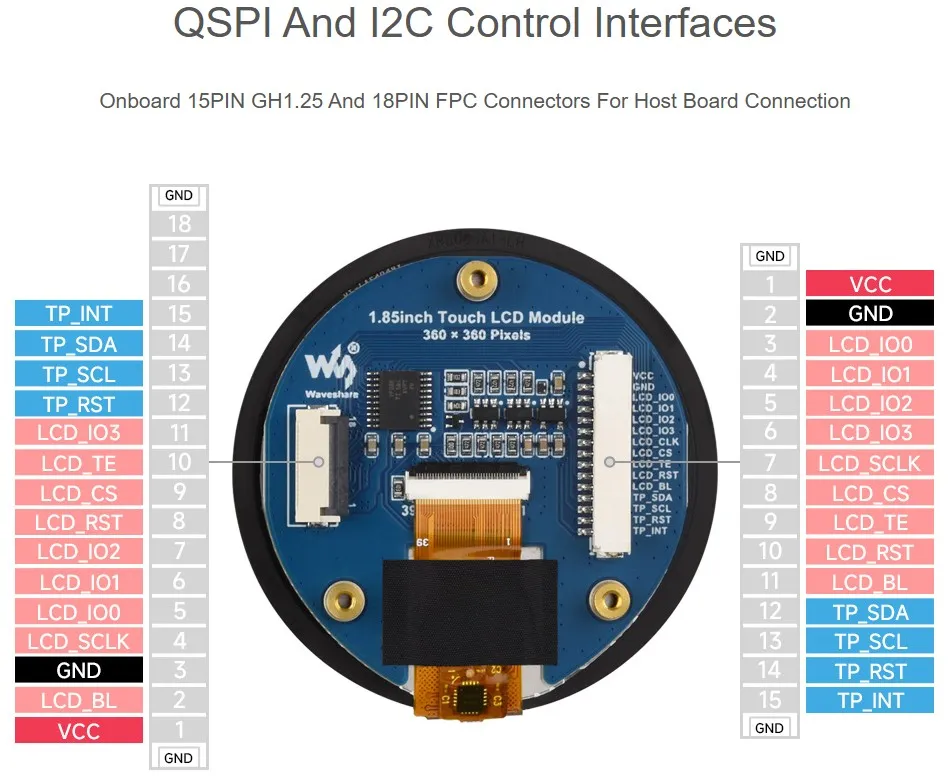

返回打样前工作 · M1.47 独立资料核对
头部布线：固定排线与跨关节线
相机需要多长的排线
当前插座与模组包络的最短距离为 58.23 mm。直线会穿过 CAM 板和 Display frame，实际走线还要更长。CAM/相机部分尺寸来自官方照片估算，这不是实物量测。

原配 FPC 的完整长度尚未查到。历史模型的 10.5 mm 只是可见段，不能作为总长或直接判定原配排线必然不足。优先取得完整料号/图纸，再评估原配、加长模组或厂家支持的延长方案；板位和镜头不动。
哪些线需要活动余量
| 连接 | 功能导线数 | 跨越关节 |
|---|
| 运动板 J5 → CAM UART | 4 | yaw＋pitch |
| 电源板 J18 → CAM USB 5V | 2 | yaw＋pitch |
| CAM SPK → 肚子外壳上的 SP3040 | 2 | yaw＋pitch |
| 电源板 J9 → 头部舵机链 | 3 | yaw |
| Yaw 舵机 ↔ Pitch 舵机机身 | 3 | 同一刚体内固定 |
| CAM DISPLAY → LCD 外接 18 针插座 | 18 | 同一刚体内固定 |
| CAM CAMERA → OV3660 | 24 | 同一刚体内固定 |
Yaw 边界至少 11 根功能导线，其中 8 根还跨 pitch；不含未知线缆的屏蔽层和备用芯线。不能用这个计数直接推出总束径。两只舵机机身都在 yaw 组；CAM、LCD、相机都在 pitch 组，头内排线可按静态布置，前提是固定点也在同一刚体。
颈部通道：零位能放下，还不能直接采用
反力轴与转动轴套之间最窄名义环隙约 1.6 mm。按项目试算每侧保留 0.3 mm，单根导线外径上限约 1.0 mm；当前 1.4224 mm 样本虽不裸碰实体，计入该余量就不通过。这个间隙不能直接当作整束通道。

轴承外侧有一条 3 mm 圆束规划段在零位实体检查通过，包含每侧 0.3 mm 余量；最小曲率半径约 22.73 mm。它固定在身体坐标中，130 姿态里 57 个会被后壳扫到，不能作为实际方案。将同一曲线每 5° 转到其他方位的 72 个有限试算也未找到通过者。
这只排除了这些固定占位曲线，没有证明活动线束无路可走。下一步需用真实线材、固定点和两侧活动余量设计动态段；路线与固定方式未确认前，不新增打印孔。3 mm 是研究尺寸，不是选定束径。
各高度通道与详细证据

中心间隙单线检查 · 外侧固定曲线与130姿态 · 72个方位试算 · 后侧纵剖面
Yaw 活动环：两组局部占位通过，完整线束未完成
已把跨 Yaw 的 11 根功能导线分组研究，检查环段在 −60°～+60° 转动时的长度和间隙。下图显示的是两组未选型圆束占位；端点还没有实际固定结构。

| 分组 | 规划占位 | 本次结果 |
|---|
| CAM 供电＋喇叭，4 根 | Ø3.505 mm；平面 Z151.5；环段中心线约261.0 mm | PASS，仅局部占位 |
| 头部舵机上游，3 根 | Ø3.123 mm；平面 Z155.2；环段中心线约340.1 mm | PASS，仅局部占位 |
| UART，4 根 | 圆束平面环、抬升环、四根分层排列的有限试算 | BLOCKED，尚无通过的完整局部候选 |
两组通过的占位已核对当前实体、已有14根固定线，以及13个Yaw角×10个Pitch角。两组外表面的全局间隙下界约 0.386 mm，比项目试算的0.3 mm只多约0.086 mm；这不是实物公差或耐久保证。
环段中心线长度保持，并不证明圆束内每根线的长度、滑移和扭转都合适，以上数字也不能作为下料长度。UART的失败仅针对列出的有限路线，不能推断所有路线都无解。
可核验的局部研究与失败记录
当前研究状态 · 两组环段的实体与130姿态检查 ·
固定长度曲线与有限搜索 · 抬升UART第一批源实体余量不足 ·
抬升UART后续有限试算 · 四根分层排列试算 ·
继续补齐硬件审查和线缆资料的交接记录
进入头部：现有空隙有路，折弯与合束尚未完成
按当前实体和有限组合姿态建立通道图后，供电／喇叭、舵机、UART三个规划束径各自找到了连续折线路径。对应名义表面间隙下界约为0.347、0.322、0.329 mm。起止点只是研究位置，还没有连接到活动环或插头。

新收到的硬件资料还确认：SH候选端子允许的绝缘外径0.4–0.8 mm，小于此前Alpha5853研究样本0.889–1.0922 mm。需要先定厂配细尾线及接续，或实际兼容线材；不能继续把样本直压到CAM接头。实际SH/GH型号、相机完整FPC和舵机物理针号视图仍待确认。
通道证据与原生剖面

扫掠实体通道图 · 三组独立路径与间隙界 · 有限平滑曲线试算 · A7新资料接收
LCD 插座已对应到正确位置

微雪官方接口照片，仅用来对应物理插座；针脚定义仍以已核对的原理图为准。
外接 18PIN 对应 STEP 的 Connector_108（电气 L1）。中央 Connector_107 是屏本体排线座。
随屏 18P / 0.5 mm / 200 mm / 同面接触排线有厂家依据，但宽厚、允许半径及 CAM 端配对方向仍待确认。
LCD 官方接口 · 官方配件列表
接下来可以在到货前完成
补齐相机完整排线资料；明确 USB/SH/喇叭及舵机线的实际插头、出线尺寸；线束已确认由供应商按图制作，逐线图纸和实际线材仍需完成。然后规划现有空隙内的路线、固定点和拆装松量，复核组合姿态。需要改打印结构时先提供候选确认。
给硬件任务的输入清单 · 连接与运动分组证据 · 名义端点/剖面报告 · 保存模型回读
此前通过的14根固定线候选仍保留：静态、130头部姿态和407身体装配位置通过，完整线束和实物资格未完成。
PROTOTYPE / UNVALIDATED。130姿态的端点回读不是线束动态寿命或连续无干涉证明。主模型及装配视频保持。